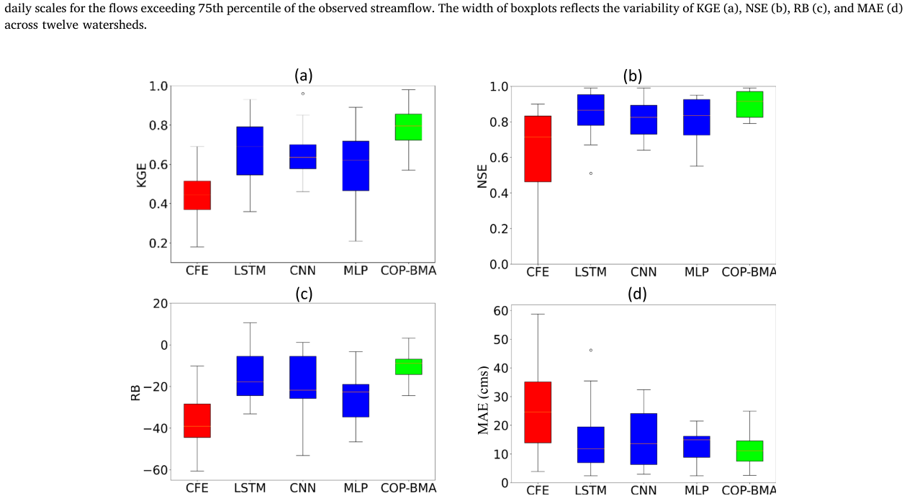
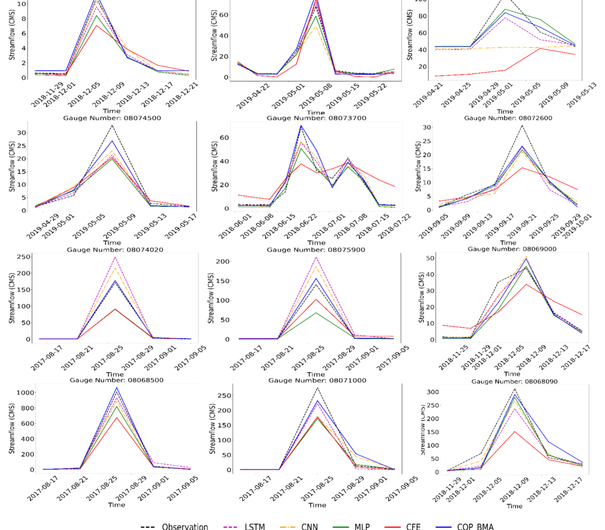
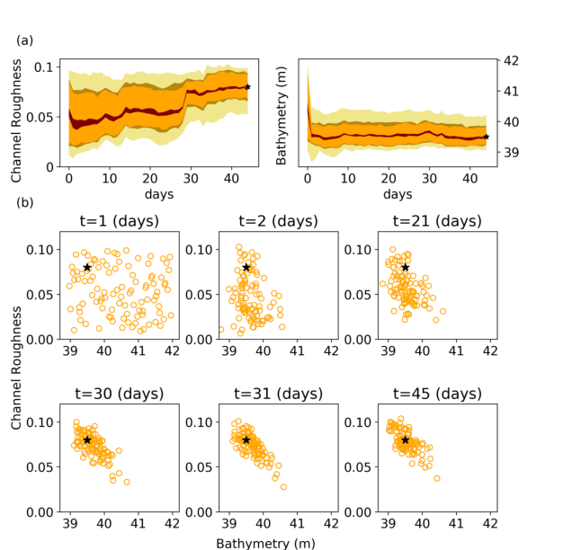
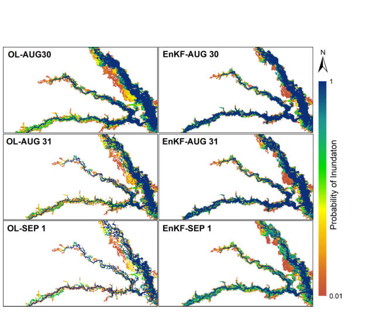
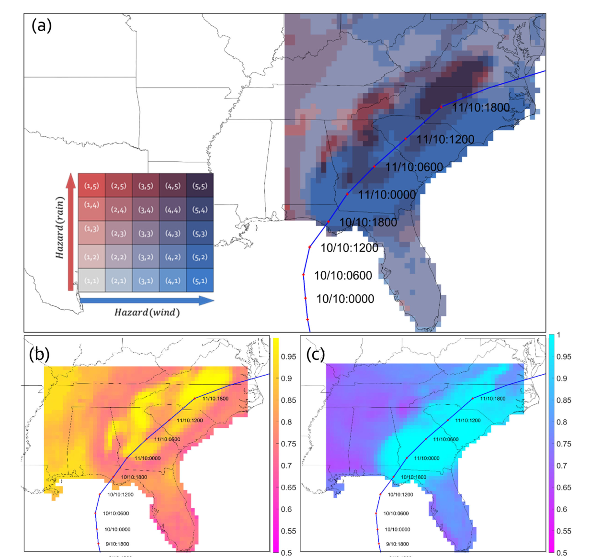

Streamflow prediction performance
Comparison of streamflow prediction performance across the hydrologic model, postprocessors, and combined approach.
View publication ↗Understanding flood evolution and supporting timely flood forecasts and warnings.
HydroExLab investigates streamflow prediction, real-time flood inundation forecasting, and the communication of evolving hydrometeorological hazards. Selected figures below highlight peer-reviewed research on forecast performance, probabilistic inundation, and hurricane hazard information.
Improving streamflow prediction accuracy and characterizing uncertainty across watersheds.

Comparison of streamflow prediction performance across the hydrologic model, postprocessors, and combined approach.
View publication ↗
Comparison of observed and predicted streamflow during selected flood periods.
View publication ↗Updating hydrodynamic predictions with observations to improve probabilistic flood inundation maps.

Temporal evolution of estimated hydrodynamic parameters during data assimilation.
View publication ↗
Comparison of probabilistic inundation maps produced with and without data assimilation.
View publication ↗Communicating changing wind and rainfall hazards to support disaster preparedness.

Bivariate hurricane hazard map and its individual wind and rainfall components.
View publication ↗Figures are reproduced from published research. Confirm applicable publisher reuse terms before public deployment.